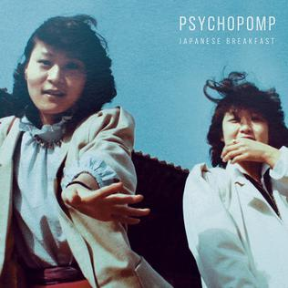
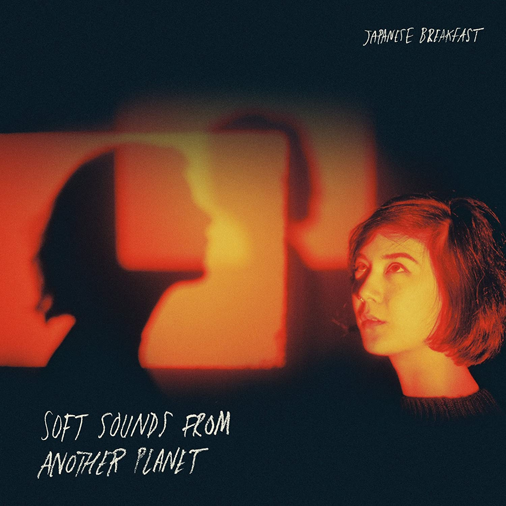
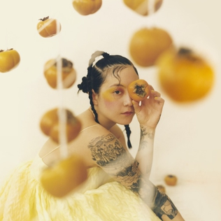
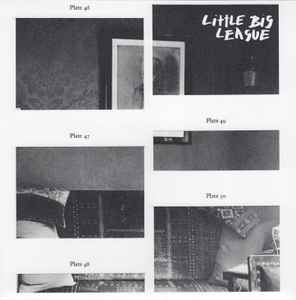
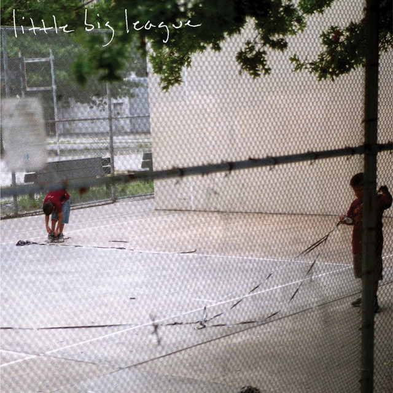
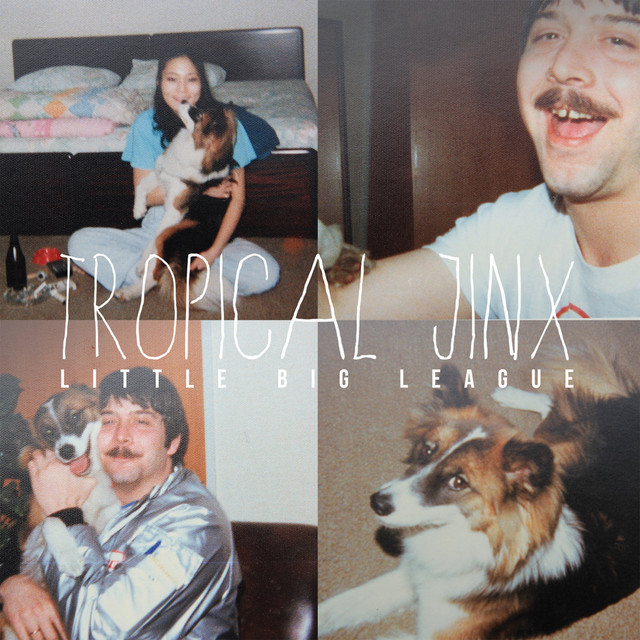

About
Michelle Chongmi Zauner (born ) is a Korean-American singer, musician, director, and author. She is best known as the lead vocalist and songwriter of the alternative pop band Japanese Breakfast. Her 2021 memoir, Crying in H Mart, passed one continuous year on the New York Times bestseller list in . In 2022, Time named her one of the 100 most influential people in the world under the category Innovators on their annual list.
Music
Japanese Breakfast
Japanese Breakfast is an alternative pop band headed by musician Michelle Zauner. Zauner started the band as a side project in 2013, when she was leading the Philadelphia-based emo group Little Big League. She has said that she named the band after seeing a GIF of Japanese breakfast and deciding that the term would be considered "exotic" to Americans; she also thought it would make others wonder what a Japanese breakfast consists of.
Little Big League
Little Big League was an American rock band from Philadelphia, Pennsylvania. Little Big League began in . They were signed to Tiny Engines and Run For Cover Records, and released two full-length albums. Their first album, titled These Are Good People, was released in 2013. Their second album, titled Tropical Jinx, was released in 2014.
Discography
Japanese Breakfast
-  Psychopomp (2016)
-  Soft Sounds from Another Planet (2017)
-  Jubilee (2021)
Little Big League
-  Little Big League (2012)
-  These Are Good People (2013)
-  Tropical Jinx (2014)
üéµ LISTEN: Japanese Breakfast - Everybody Wants to Love You [Official Single]
Upcoming Concerts
Japanese Breakfast's upcoming 2022 United Kingdom Tour begins
Books
Crying in H Mart
Crying in H Mart: A Memoir is a 2021 memoir by Michelle Zauner. It is her debut book, published on by Alfred A. Knopf. It is an expansion of Zauner's essay of the same name which was published in The New Yorker on
“It felt like the world had divided into two different types of people, those who had felt pain and those who had yet to.”
― Michelle Zauner, Crying in H Mart
Links
Contact
Get in touch with Japanese Breakfast's ManagerLocated:
Philadelphia, Pennsylvania
USA